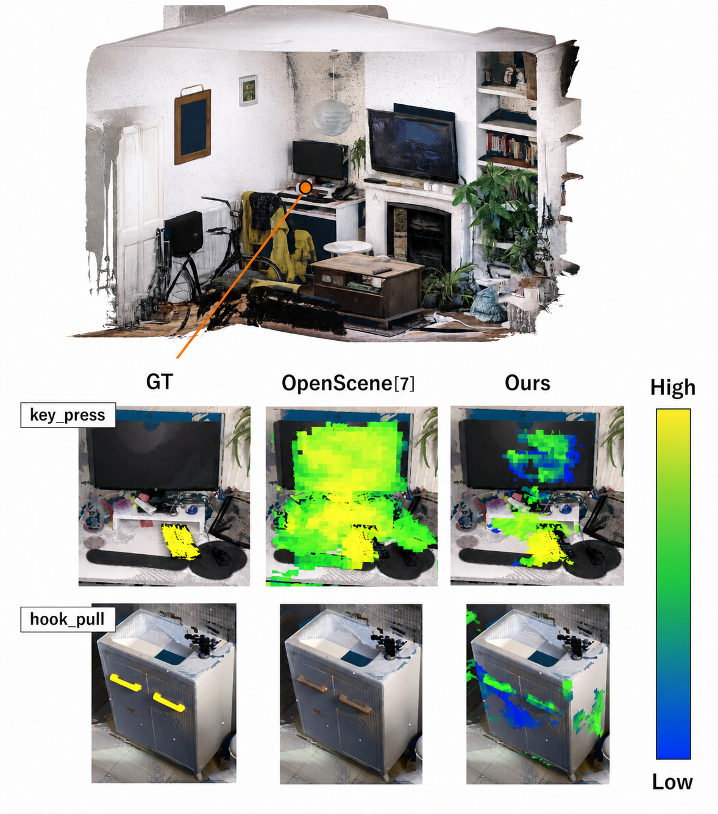

Researcher of Active Vision
荒明 尚輝Naoki Araake
人がもっと自由に動ける世界へ。
人が身体、脳、空間、時間の制約から解放される社会へ。
BMVC 2026 Paper Accepted
Research Focus
見えている世界を認識するロボットから、
必要な世界を見にいくロボットへ
Active Vision for manipulation
ロボットが人間の世界で行動するには、与えられた視点を認識するだけでは不十分です。 見えない部分、隠れている部分、操作に必要な部分を自ら確かめにいくことで、より安全で確実に行動できるロボットを目指しています。
3D scene affordance segmentation
学部時代は、3D点群を用いてシーン内のアフォーダンスを認識する研究に取り組みました。 物体単体ではなく、空間の中で「どこにどのような行為が可能か」を推定することに関心があります。
BMVC 2026 · Paper Accepted
Part-Aware Prompt Adaptation for 3D Scene Affordance Segmentation
カメラレディ原稿のURLは、OpenReviewで公開され次第掲載予定です。
採択論文一覧（No. 555） ↗
Projects & Experience
学んだ技術を社会に役立てるために
ムーンショット目標1への参画
「誰もが自在に活躍できるアバター共生社会の実現」を目標に、CAで身体的・認知的能力を拡張し、時間・空間の制約を越えて社会参加できる未来に取り組んでいます。
京都大学 × 三菱電機 共同研究
自身のActive Vision研究と並行して、京都大学と三菱電機の共同研究に参画し、暗黙知に関する研究に取り組んでいます。
KUPAC / 京都大学 Physical AI Community
Physical AIに関する勉強会やイベントに参加し、研究者や学生との交流を通じて知識を広げています。
KUPACについて ↗葛飾キャンパスロッカープロジェクト
Excel管理だったロッカー予約を、大学メール認証と自動割り当てを備えた予約システムに置き換え、人手による本人確認や割り振り作業を減らしました。
Nebraska / 無人書店
LLMとの会話で曖昧な本のイメージを具体化する推薦システムを開発。さらに、オーナーが有人・無人・営業時間外をWebで指定し、ドア開閉まで連動するサイネージ管理システムにも取り組みました。
Infodeliver / 管理者エージェント
Jiraなどのタスク情報を読み取り、Slackで進捗確認や期限超過タスクへのフィードバック、日次レポート生成を行う社内業務改善エージェントを開発しました。
Bandai Namco Holdings
Goを用いたゲームバックエンド開発を経験。仕様書に沿って機能を実装し、エンターテインメント領域の開発プロセスに触れました。
CyberAgent / CYCOMPE
バックエンド部門で、Goを用いてABEMAのような配信サービスの機能を実装。与えられたテストを通しながら、実装の完成度とスコアを競いました。
Achievements
表彰実績、論文採択
東京理科大学 工学部 情報工学科 優秀学生賞
学部時代の研究活動と成績が評価され、首席卒業に相当する賞をいただきました。このような形で学部での取り組みを認めていただけたことを光栄に思います。
BMVC 2026
Paper Accepted
3Dシーンのアフォーダンスセグメンテーションに関する論文が、国際会議BMVC 2026に採択されました。
MIRU 2026
Oral Presentation
3Dシーンのアフォーダンスセグメンテーションに関する研究が、MIRU 2026の口頭発表に採択されました。
技育キャンプ GMOインターネット 企業賞
AIを導入した競技プログラミング学習サイトを開発し、大学2年生で初めてハッカソン入賞。この経験をきっかけに、インターンやエンジニアとの交流へ踏み出しました。
技育キャンプアドバンス ウイングアーク1st 企業賞
競技プログラミング学習サイトをブラッシュアップ。UIの見直しや機能の追加・削除を行い、直感的でわかりやすい設計が評価されました。
Profile
Naoki Araake / 荒明 尚輝
京都大学大学院 情報学研究科 谷口研究室で Active Vision と Manipulation に取り組んでいます。 関心は、ソフトウェアによる自動化を物理世界へ拡張し、人が余計な作業から解放される社会をつくることです。
- Previous
- Tokyo University of Science / Irie Lab
- Current
- Kyoto University / Taniguchi Lab